Science teacher Ryland Grace wakes up on a spaceship light years from home with no recollection of who he is or how he got there. As his memory returns, he begins to uncover his mission: solve the riddle of the mysterious substance causing the sun to die out. He must call on his scientific knowledge and unorthodox ideas to save everything on Earth from extinction.


Ben Reilly, an aging and down on his luck private investigator in 1930s New York, is forced to grapple with his past life as the city's one and only superhero.


Trending Movies
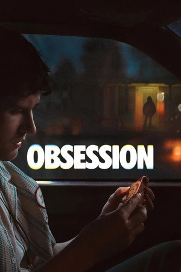
Obsession

Backrooms
Project Hail Mary
Tom Clancy's Jack Ryan: Ghost War
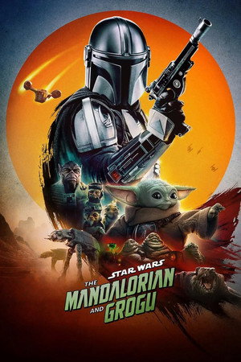
The Mandalorian and Grogu
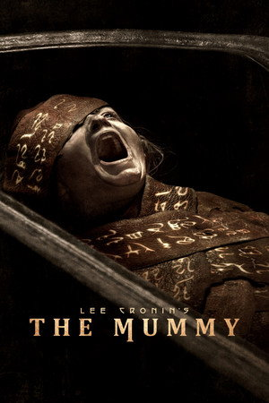
Lee Cronin's The Mummy

Ladies First
The Super Mario Galaxy Movie

Fuze

Iron Lung
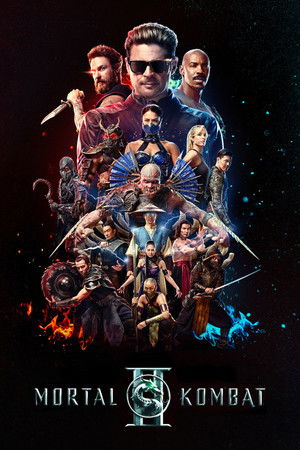
Mortal Kombat II

Over Your Dead Body

Propeller One-Way Night Coach

Michael

Disclosure Day

Scary Movie

Toy Story 5

Avatar: Fire and Ash

Animal Farm
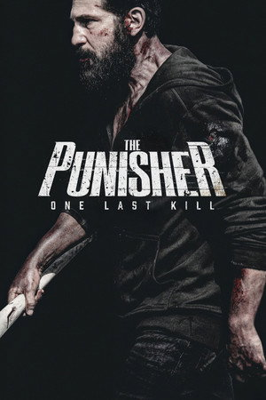
The Punisher: One Last Kill
Trending Series

Spider-Noir

The Boys

Off Campus

Star City

FROM

Euphoria

The Boroughs

One Piece

Dutton Ranch

Rick and Morty

Widow's Bay

For All Mankind

A Good Girl's Guide to Murder

Half Man

The Four Seasons

The WONDERfools

Re:ZERO -Starting Life in Another World-

Marshals

The Lead

Berlin and the Lady with an Ermine
Movies on
Dhurandhar: The Revenge
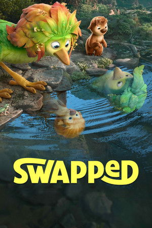
Swapped
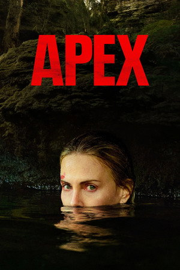
Apex
Ladies First

GOAT

Kartavya

Dhurandhar

After We Fell

Remarkably Bright Creatures

My Dearest Assassin

Fifty Shades Freed

War Machine

How to Have Sex

KPop Demon Hunters

28 Years Later: The Bone Temple

Jurassic World Rebirth

Fifty Shades of Grey

The Crash

Spider-Man

Kara
Series on

Grey's Anatomy

Law & Order
Berlin and the Lady with an Ermine

NCIS

Breaking Bad

The Apothecary Diaries

Shameless

The Blacklist

Stranger Things

JUJUTSU KAISEN

S.W.A.T.

Suits

The Flash
The Boroughs

Miraculous: Tales of Ladybug & Cat Noir

The Walking Dead
The WONDERfools

Peaky Blinders

Outlander

Young Sheldon
Popular Movies
View AllLee Cronin's The Mummy
Tom Clancy's Jack Ryan: Ghost War
Obsession
The Punisher: One Last Kill
Project Hail Mary
The Super Mario Galaxy Movie
Dhurandhar: The Revenge
Swapped
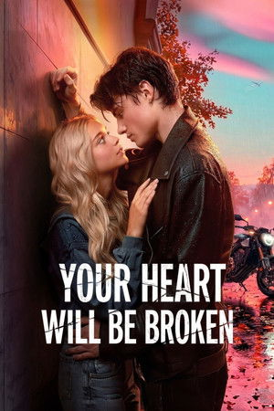
Your Heart Will Be Broken
Pati Patni Aur Woh Do
Mortal Kombat II
The Mandalorian and Grogu
System
Chand Mera Dil
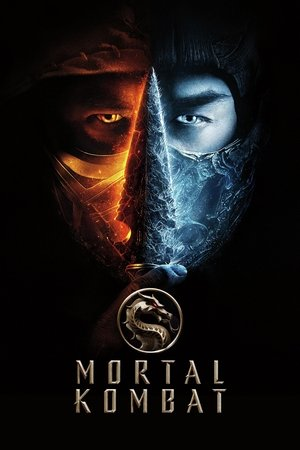
Mortal Kombat
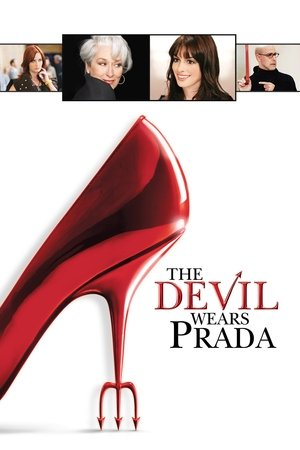
The Devil Wears Prada
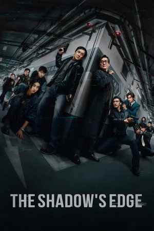
The Shadow's Edge
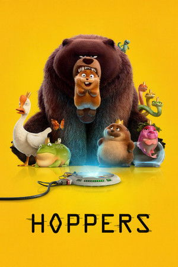
Hoppers
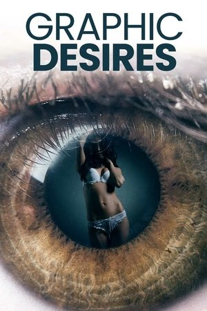
Graphic Desires
Apex
Popular Series
View All
Home and Away
Off Campus
FROM
The Boys
Spider-Noir

Law & Order: Special Victims Unit
Euphoria

The Rookie
Grey's Anatomy
Law & Order

Supernatural
Berlin and the Lady with an Ermine
NCIS

Criminal Minds

Game of Thrones

The Simpsons

The Mentalist
Breaking Bad

Family Guy

CSI: Crime Scene Investigation
Top Rated Movies
View AllSwapped

The Shawshank Redemption

The Godfather
Project Hail Mary

The Godfather Part II

Schindler's List

12 Angry Men

Spirited Away
Remarkably Bright Creatures

The Dark Knight

Dilwale Dulhania Le Jayenge

The Green Mile

The Lord of the Rings: The Return of the King

Parasite

¿Quieres ser mi hijo?

Pulp Fiction

Your Name.

Interstellar

The Good, the Bad and the Ugly

Forrest Gump
Top Rated Series
View AllOff Campus
Breaking Bad

Frieren: Beyond Journey's End

Reply 1988

Avatar: The Last Airbender

Arcane

The Pitt

The Chosen
One Piece

When Life Gives You Tangerines

Chernobyl

Fullmetal Alchemist: Brotherhood

Better Call Saul

Heated Rivalry

Attack on Titan
Rick and Morty

The Fragrant Flower Blooms with Dignity

The Sopranos

The Owl House

Hunter x Hunter